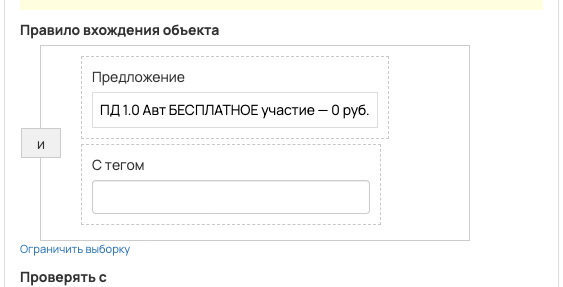
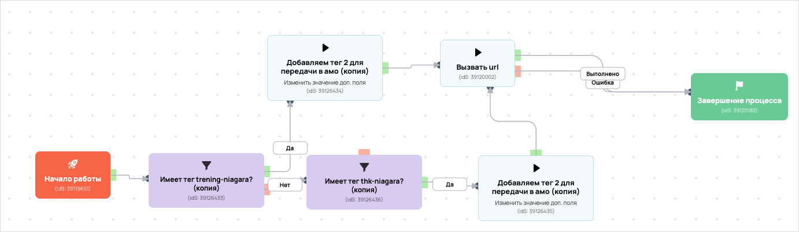

[AMO] [ED] Отдел Доведения Регистрации
- ID процесса:
2256184 - Объект: Заказы
- Статус: Ожидание событий
Описание из GetCourse
30.06.2026. Подробный ход процесса GetCourse:
Главное: В процесс попадают заказы по правилу: Предложение (ID: 7087359) и С тегом (ID: 2069802, 2070128).
Процесс работает с объектом GetCourse: Заказы. Текущий статус процесса: Ожидание событий.
Как идет процесс внутри GetCourse:
- Схема состоит из 9 блоков и 12 переходов.
Конец подробного хода процесса GetCourse.
30.06.2026. Актуальное описание процесса:
Главное: В процесс попадают заказы по правилу: Предложение (ID: 7087359) и С тегом (ID: 2069802, 2070128).
Процесс работает с объектом GetCourse: Заказы. Текущий статус процесса: Ожидание событий.
Конец актуального описания процесса.
https://vakas-tools.ru/account/base/amo.php?base_id=87770
Понятное описание процесса
- Процесс работает с объектом GetCourse: Заказы. Текущий статус процесса: Ожидание событий.
- На вход попадают данные так: В процесс попадают заказы по правилу: Предложение (ID: 7087359) и С тегом (ID: 2069802, 2070128).
- Внутри схемы есть дополнительные проверки/ожидания: 2. Основные блоки: «Имеет тег trening-niagara? (копия)»; «Имеет тег thk-niagara? (копия)».
- Дальше процесс делает прямые вызовы Vakas: 1. Напрямую задействованы базы: 87770.
- Передача: 87770. Отдел Доведения Регистрации: Оплаты и заказы. Передаются параметры:
number,id,order_id,positions,costMoney,leftCostMoney,payedMoney,status,paymentLink,firstNameи другие. - Что происходит в amoCRM: На входе в этап ОТДЕЛ - ДОВЕДЕНИЯ -> РЕГИСТРАЦИИ [71064150] база ищет дубль и может взять старую сделку только из заранее разрешенных этапов.
Ход процесса в GetCourse
- Схема состоит из 9 блоков и 12 переходов.
- По типам: стартов 1, условий/ожиданий 2, вызовов URL 3, изменений полей 2, финалов 1.
Блоки процесса: что делают и зачем нужны:
- Блок
39119661«Начало работы» (старт). Что делает: Запускает выполнение схемы для объекта, который попал под правило входа процесса. Зачем нужен: Нужен как точка входа: от него GetCourse начинает движение объекта по схеме. Дальше: если результат «Выполнено», идет в «Имеет тег trening-niagara? (копия)». - Блок
39126433«Имеет тег trening-niagara? (копия)» (условие). Что делает: Проверяет условие: С тегом (ID: 2069802). Зачем нужен: Нужен, чтобы разделить поток: подходящих пользователей/заказы отправить дальше, неподходящих перевести на другую ветку или завершить. Дальше: если результат «Нет», идет в «Имеет тег thk-niagara? (копия)»; если результат «Да», идет в «Добавляем тег 2 для передачи в амо (копия)». - Блок
39126434«Добавляем тег 2 для передачи в амо (копия)» (изменение поля). Что делает: меняет полеdeal_tag_2(Установить равным). значение: trening-niagara Зачем нужен: Нужен, чтобы записать внутри GetCourse технический признак/значение, которое потом используется в передаче или логике ветвления. Дальше: если результат «Выполнено», идет в «Вызвать url». - Блок
39120002«Вызвать url» (вызов URL). Что делает: Передает в Vakas: 87770. Отдел Доведения Регистрации, канал «Оплаты и заказы» (GET); параметры:number,id,order_id,positions,costMoney,leftCostMoney,payedMoney,status,paymentLink,firstName,lastName,name,email,phoneи другие; timeout 300 сек. Зачем нужен: Нужен, чтобы передать подходящий объект в 87770. Отдел Доведения Регистрации; дальше На входе в этап ОТДЕЛ - ДОВЕДЕНИЯ -> РЕГИСТРАЦИИ [71064150] база ищет дубль и может взять старую сделку только из заранее разрешенных этапов. Дальше: если результат «Ошибка», идет в «n8n fail после Вызвать url #39120002»; если результат «Выполнено», идет в «n8n success после Вызвать url #39120002». - Блок
43525679«n8n success после Вызвать url #39120002» (вызов URL). Что делает: Вызывает внешний URL: testn8n.easydrafting.ru/webhook/gc-vakas-retry-events (POST); параметры:event,clientED,gcDomain,action,process_id,process_name,entity_type,object_id,order_id,user_id,name,email,phone,error_message; timeout 10 сек. Зачем нужен: Нужен, чтобы процесс GetCourse передал данные во внешний сервис testn8n.easydrafting.ru. Дальше: если результат «Ошибка», идет в «Завершение процесса»; если результат «Выполнено», идет в «Завершение процесса». - Блок
39120182«Завершение процесса» (завершение). Что делает: Завершает ветку процесса после выполненных проверок и действий. Зачем нужен: Нужен, чтобы закрыть текущую ветку и не гонять объект по процессу повторно. Дальше переходов нет: это конечная точка ветки. - Блок
43525680«n8n fail после Вызвать url #39120002» (вызов URL). Что делает: Вызывает внешний URL: testn8n.easydrafting.ru/webhook/gc-vakas-retry-events (POST); параметры:event,clientED,gcDomain,action,process_id,process_name,entity_type,object_id,order_id,user_id,name,email,phone,error_message; timeout 10 сек. Зачем нужен: Нужен, чтобы процесс GetCourse передал данные во внешний сервис testn8n.easydrafting.ru. Дальше: если результат «Ошибка», идет в «Имеет тег trening-niagara? (копия)»; если результат «Выполнено», идет в «Добавляем тег 2 для передачи в амо (копия)». - Блок
39126435«Добавляем тег 2 для передачи в амо (копия)» (изменение поля). Что делает: меняет полеdeal_tag_2(Установить равным). значение: thk-niagara Зачем нужен: Нужен, чтобы записать внутри GetCourse технический признак/значение, которое потом используется в передаче или логике ветвления. Дальше: если результат «Выполнено», идет в «Вызвать url». - Блок
39126436«Имеет тег thk-niagara? (копия)» (условие). Что делает: Проверяет условие: С тегом (ID: 2070128). Зачем нужен: Нужен, чтобы разделить поток: подходящих пользователей/заказы отправить дальше, неподходящих перевести на другую ветку или завершить. Дальше: если результат «Да», идет в «Добавляем тег 2 для передачи в амо (копия)».
Скриншоты процесса


Откуда: процесс берет заказы с отбором по тегам. Полное правило показано на скриншоте ниже.
Что проверяет по пути: Имеет тег trening-niagara?, Имеет тег thk-niagara?.
Куда ведет: вызывает внешние URL: Вызвать url; обновляет доп. поля GetCourse (1 разных действий).
Логика Vakas и amoCRM
- Условие входа в процесс: Предложение (ID: 7087359) и С тегом (ID: 2069802, 2070128).
- Вызовов Vakas в схеме:
1. Уникальных URL Vakas:1. Связанных баз:1.
Связанная база Vakas: 87770. Отдел Доведения Регистрации
- Использование в процессе: Оплаты и заказы
- Документация базы: 87770. Отдел Доведения Регистрации
- Страница настройки: Vakas
- Поиск дублей: Проверять на дубли
- Искать только в выбранных воронках: 1
- Ответственный по контакту имеет приоритет: Нет
Вызовы из процесса
Вызвать url
- Endpoint:
payments - URL вызова:
https://vakas-tools.ru/base/payments/8927217/87770/?number={object.number}&id={object.user.id}&order_id={object.id}&positions={object.positions}&costMoney={object.cost_money}&leftCostMoney={object.left_cost_money}&payedMoney={object.payed_money}&status={object.status}&paymentLink={object.payment_link}&firstName={object.user.first_name}&lastName={object.user.last_name}&name={object.user.name}&email={object.user.email}&phone={object.user.phone}&manager_name={object.manager}&manager_email={object.manager_email}&manager_phone={object.manager_phone}&offers={object.offers}&avatarUrl={object.user.avatar_url}&utmS={object.user.create_session.utm_source}&utmM={object.user.create_session.utm_medium}&utmCa={object.user.create_session.utm_campaign}&utmCo={object.user.create_session.utm_content}&utmT={object.user.create_session.utm_term}&order_name_amo={object.order_name_amo}&order_price={cost_money_value}&pay_date={object.payed_at format="d.m.Y H:i"}&tag_deal_2={object.deal_tag_2} - Связанная база Vakas: 87770. Отдел Доведения Регистрации
Когда срабатывает в процессе
- Сценарий 1:
Начало работы--Выполнено-->Имеет тег trening-niagara? (копия)--Нет-->Имеет тег thk-niagara? (копия)--Да-->Добавляем тег 2 для передачи в амо (копия)--Выполнено-->Вызвать url- условие
Имеет тег trening-niagara? (копия): С тегом (ID: 2069802) ->Нет - условие
Имеет тег thk-niagara? (копия): С тегом (ID: 2070128) ->Да
- условие
- Сценарий 2:
Начало работы--Выполнено-->Имеет тег trening-niagara? (копия)--Да-->Добавляем тег 2 для передачи в амо (копия)--Выполнено-->Вызвать url- условие
Имеет тег trening-niagara? (копия): С тегом (ID: 2069802) ->Да
- условие
Что уходит в Vakas
<details> <summary>Показать 28 параметров запроса</summary>
numberidorder_idpositionscostMoneyleftCostMoneypayedMoneystatuspaymentLinkfirstNamelastNamenameemailphonemanager_namemanager_emailmanager_phoneoffersavatarUrlutmSutmMutmCautmCoutmTorder_name_amoorder_pricepay_datetag_deal_2
</details>
Как база обработает вызов и что будет в amoCRM
- Логика создания сделки: сначала ищется существующая сделка/контакт по правилам базы; если подходящая сделка найдена, обновляется она, иначе создается новая.
- Режим проверки дублей: Проверять на дубли
- Искать дубль только в выбранных воронках: 1 шт.
- Учитывать закрытые этапы при поиске дубля: нет
- Добавлять телефон/email в найденный контакт: Нет
- Менять имя контакта при обновлении: Нет
ОТДЕЛ - ДОВЕДЕНИЯ [6795422]- Автоотправка оплат в amoCRM: Да
- Базовый этап для этого вызова: определяется по типу оплаты
- Новый заказ: ОТДЕЛ - ДОВЕДЕНИЯ -> РЕГИСТРАЦИИ [71064150]
- Частичная оплата: ОТДЕЛ - ДОВЕДЕНИЯ -> РЕГИСТРАЦИИ [71064150]
- Полная оплата: ОТДЕЛ - ДОВЕДЕНИЯ -> РЕГИСТРАЦИИ [71064150]
- Поле amoCRM для суммы: оплачено[payedMoney]
- Двигать старые сделки только с выбранных этапов: Да
- Этапы, из которых разрешен сдвиг: 13 этапов
- Не менять этап при обновлении: Нет
- Менять название сделки при обновлении: Нет
- Теги сделки: {pay_field_tag_deal_2}
- Ответственный по умолчанию: EasyDrafting[12985298]
- Индивидуальные правила маршрутизации: нет